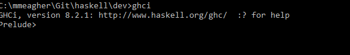
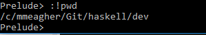

Getting Started with GHCi
Installing and using GHCi
Objectives
On completion of this lab you should:
have GHC complier and interpreter installed on your laptop.
be able to use the GHCi interpreter to test simple examples.
be able to run simple Haskell scripts using the GHCI interface.
Installing GHC (Glasgow Haskell Compiler)
- I am assuming that you are installing GHC on your own laptop.
Downloading and installing GHC
GHC inludes a compiler and an interpreter (GHCi).
The environment can be downloaded from https://www.haskell.org/ghc/.
OS-specific packages can be easier to use - see https://www.haskell.org/ghc/distribution_packages.html

Install the package.
Run the interpreter (GHCi) by simply  or running the GHCi app.
(Note that the Prelude prompt when using the command line means that the (standard) Prelude library is loaded.)
Running simple Haskell programs
- We can execute small simple programs using GHCi (i for interactive) alone.
- To practice this, firstly run the GHCi interpreter (as per previous page). A prompt is displayed >
- Use GHCi to evaluate the following:
Exercise 1
2+3Exercise 2
2*3Exercise 3
div is the infix integer division operator (note the quotes character - backward quote)
7 `div` 2Exercise 4
Select the first element of a non-empty list:
head [1,2,3,4,5]Exercise 5
Remove the first elemenet of a non-empty list:
tail [1,2,3,4,5]Exercise 6
Select the first n elements of a list:
take 3 [1,2,3,4,5]Exercise 7
Remove the first n elements of a list:
drop 3 [1,2,3,4,5]Exercise 8
Select the nth element of a list (from index 0):
[1,2,3,4,5] !! 3Exercise 9
Calculate the length of a list:
length [1,2,3,4,5]Exercise 10
Calculate the sum of a list:
sum [1,2,3,4,5]Exercise 11
Calculate the product of a list:
product [1,2,3,4,5]Exercise 12
Append two lists:
[1,2,3,4,5] ++ [4,6,7,8]Exercise 13
Calculate the reverse of a list:
reverse [1,2,3,4,5]Exercise 14
Prepend an element to a list:
1: [2,3,4,5]Using GHC
- To load compiled code.
- Using the terminal, cd to your working directory. (this just makes the loading simpler)
- Create a simple Haskell script:
main = print (fac 20)
fac 0 = 1
fac n = n * fac (n-1)Call it, e.g. 'Main.hs'

- This compiles it as well as loading it. You can now call the fac function:

You can also call the main function:

If you make any changes to the script, you need to reload it (thus recompiling it) :

A list of GHCi commands is available at https://downloads.haskell.org/~ghc/7.4.1/docs/html/users_guide/ghci-commands.html
When you need to use a terminal command, just use :! as in 